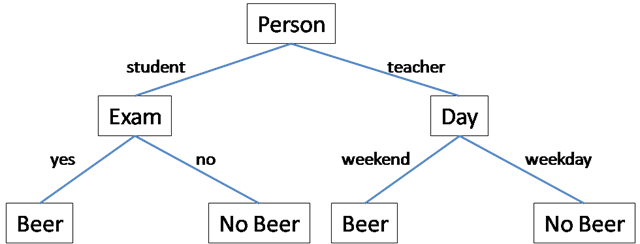
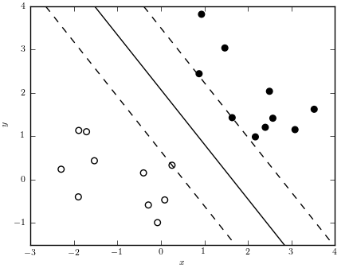
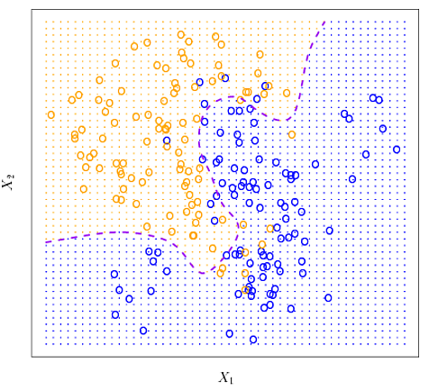
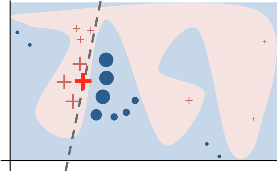
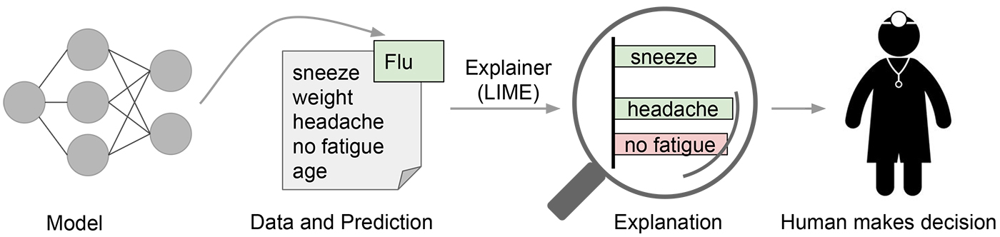
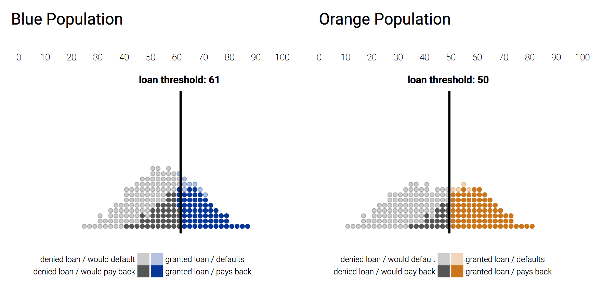
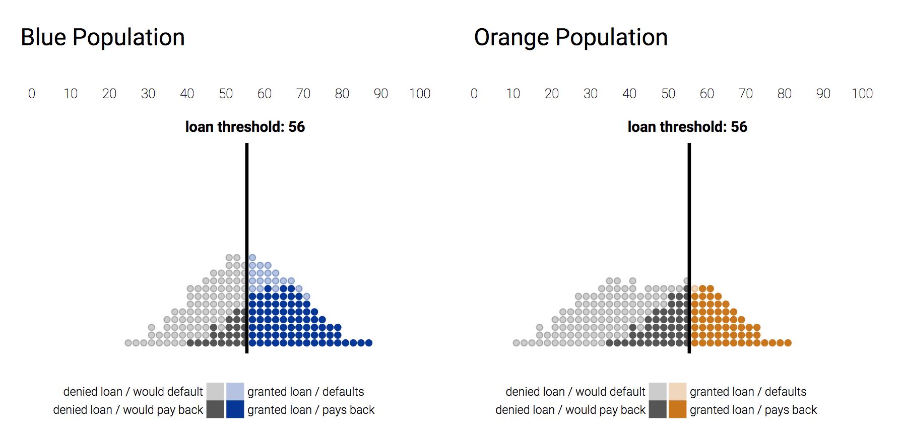
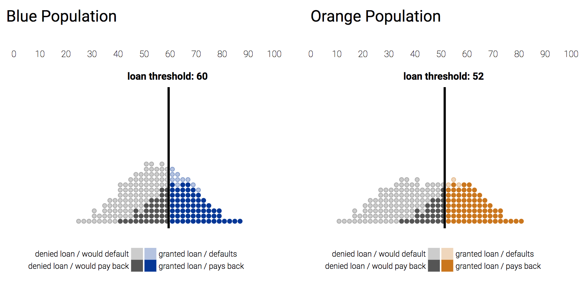
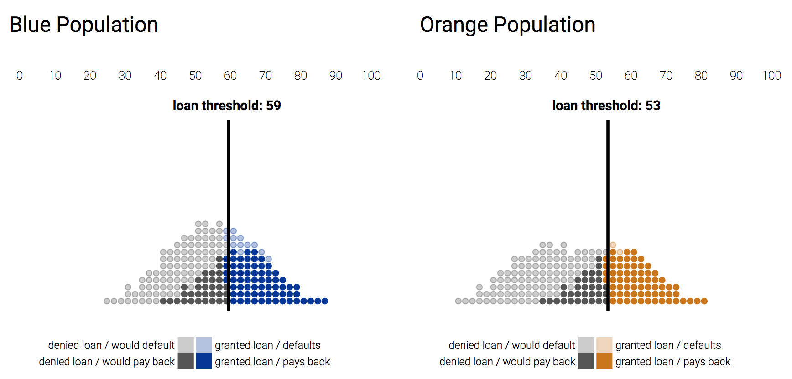

If you aren’t living in a cave, chances are, you are interacting with
machine learning systems on a daily basis. Machine learning is a subfield
of computer science that finds patterns in data to perform tasks (Karpathy).
Facebook uses it to tag faces. Google uses it to suggest you ads for things
that seem
creepily similar
to what you were browsing last night. Apple uses
it to make Siri respond to language more naturally. Instead of relying on
preprogrammed rules, machine learning programs learn from data that they
are given (Karpathy).
This has served many applications well, because for many problems, it’s a
lot harder to manually write rules for a task than to let the computer
figure it out from data (Karpathy). For example, it is hard to describe what
a face is numerically, but machine learning algorithms can figure that out from
examples. In other cases, these systems automatically produce more useful
rules to help classify data than human data analysts can do manually, saving
us effort while achieving higher performance. This is leading to a paradigm
shift in software engineering, where we move from writing explicit rules to
identifying some task and finding many examples of already solved versions
of it for the computer to learn (Karpathy).
The Problem of Bias
As machine learning technology matures, it starts to impact us in more
profound ways than just Siri or photo tagging. They also assist in decision
making or sometimes even make decisions autonomously in areas like criminal
justice, loan approval, and finance . Since machine learning involves statistics
and data, it is assumed to be neutral or more reliable than human decision makers
(Barocas). However, data is not objective. There are biases from historical data
resulting from intentional discriminatory actions in the past or even previously
unknown patterns of inequality (Barocas). Data-based decision making systems
will only perpetuate these biases (Barcocas). For example, loan approval systems
might overestimate the risk of African Americans defaulting on loans because there
are more instances of them doing so in the data. Machine learning is used to
recognize patterns in data and make predictions about things that it hasn’t seen.
It’s a general purpose technology relevant to many fields. As these systems help
make more decisions, they also have more power to do harm (Knight). Therefore, we
must investigate this potential for bias and how to mitigate its damage.
A tool used in criminal justice departments around the country is called COMPAS,
which stands for Correctional Offender Management Profiling for Alternative
Sanctions. It’s a risk assessment tool that predicts someone’s probability of
committing a future crime, also called recidivism (Angwin). This system outputs a
risk score between 1 to 10 in multiple categories, such as “probability for future
violent crime” or “general recidivism” (Angwin). In Arizona, Colorado, Delaware,
Kentucky, Louisiana, Oklahoma, Virginia, Washington and Wisconsin, these scores
are presented to judges during sentencing to help make decisions. In 2016,
ProPublica studied these predictions and concluded that it systematically overestimates
risk scores for black people and underestimates risk for white people (Angwin).
Although Northpointe claims that COMPAS isn’t discriminatory because its error
rate is the same for people of all races, it actually systematically favors white
people and hurts black people (Angwin). This system has more potential to do harm
because it’s seen as objective, and judges take these scores seriously. Paul Zilly,
who stole a push lawn mower and some tools in Wisconsin in 2013, had his plea deal
overturned and his sentence doubled because of his high risk scores, according to the
judge (Angwin).
The calculations that goes into predicting these scores are kept secret by Northpointe
because they are proprietary, but the data for past predictions are publically
available through public records requests, which is what ProPublica used for their
analysis (Angwin). An unbiased risk assessment tool has the potential to remove long
standing institutional discrimination in the criminal justice system and beyond, but
a biased one only affirms existing practices because they are seen as trustworthy.
Before going into solutions, we need a quick introduction to machine learning.
Machine Learning Techniques
Machine learning can perform either classification or regression (Goodfellow).
Classification means classifying a data point as belonging to a category, and
regression means predicting a real-numbered value. An example classification
problem could be predicting whether an image is a dog or a cat, while an example
regression problem could be predicting the prices of houses. Each data point
contains multiple types of information about a single subject, called features.
Features could be age, gender, whether someone has a house, or answers to a
questionnaire. Machine learning uses features to make predictions (Goodfellow).
Decision Trees
One of the simplest algorithms in machine learning is a decision tree. Given each
data point, a decision tree asks a series of questions to classify it. For example,
when classifying an animal, a decision tree might ask, “does it have four legs”,
“does it have wings”, etc. Each question helps it get closer to the answer. The
algorithm learns the best questions to ask from existing data.

A Simple Decision Tree for Whether to Give Someone Beer
from
https://computersciencesource.wordpress.com/2010/01/10/year-2-machine-learning-decision-trees/
The person who made the graph might have wanted to say, if the student has
an exam, then don't give them beer, but it's reversed in the graph.
Logistic Classification
A slightly more complex model is logistic classification. First, it weights each
feature and adds them together. Then, it passes the result through the sigmoid
function, which outputs a number between 0 and 1, the probability of the data point
belonging to one of two categories.
$ f(x) = sigmoid(a_1 x_1 + a_2 x_2 + \ldots + a_n x_n) $
Logistic Regression Equation
Sigmoid Function
This way, big values get capped at 1 and small values at 0.
The black dashed line is the threshold used to classify two different
classes.
It determines the weights of each feature through training on existing data and
learns the weights that achieves the lowest prediction error. This occurs
incrementally where the error is examined every iteration and the weights are
updated to reduce it. This idea of incremental weight update is used for training
many more models.
Support Vector Machine
Support Vector Machines (SVMs) calculates a line (or a hyperplane in higher
dimensions) that separates two classes of data with the largest margin. A technique
called the
kernel trick is used to warp space to classify data that isn’t
linearly-separable, making SVMs more complex than the previous techniques. SVMs find
the optimal hyperplane to separate the data through solving an optimization problem.

Illustration of an SVM
from
http://www.astroml.org/book_figures/chapter9/fig_svm_diagram.html
The space between the solid and dashed lines is the margin.
The Solution
While there is no mature, comprehensive solution to this problem, there are
solutions to address different parts of the problem to ensure that machine
decisions are fair. First, we need transparency. If an ML model is being used to
make decisions in the criminal justice system, everyone should be able to look
inside it and test it out themselves. NorthPointe keeps COMPAS private because
they are a for-profit company and don’t want their company secrets stolen.
This is unacceptable. We don’t have the right to due process if an opaque
piece of software is spitting out numbers that influence our sentencing or bail
amount. Even if the model itself is a black box, there are still ways to audit
it for bias if the software was accessible to all.
Detecting Bias
Once the model is accessible, the next step is to properly test it for bias.
ProPublica’s manual analysis of COMPAS was informative, but it requires
significant amounts of effort. A group of data scientists had to go through
a series of plots and interpretations. We should develop tools to automate
this. For example,
Julius Adebayo,
a current Google Brain Resident, made
FairML,
a toolbox for auditing predictive models for bias. It’s often useful to look at
how each feature in the input affects the output. If race has the largest impact
on output predictions, then the model is definitely discriminatory based on race.
A common way to check this is to change each input feature slightly to see how
much the output changes. This lets us establish the sensitivity of the output
to each input feature. However, it’s not as easy as that. Input features may be
connected, and one factor might be more important in the presence of another
factor (Adebayo, “FairML”). Adebayo’s FairML counteracts this through orthogonal
transformation of the input data, a technique that removes all linear relationships
between features (Adebayo, "Iterative"). To illustrate how easy it is to audit a
model with FairML, here’s all the code that’s needed to audit a model and graph
the importance of the features.
from fairml import audit_model, plot_dependencies
# where clf.predict is the function that outputs predictions
total, _ = audit_model(clf.predict, propublica_data)
# generate feature dependence plot
fig = plot_dependencies(
total.get_compress_dictionary_into_key_median(),
reverse_values=False,
title="COMPAS Feature Dependence"
)
data from
http://blog.fastforwardlabs.com/2017/03/09/fairml-auditing-black-box-predictive-models.html
Chart was created separately with plotly.js, but made to
resemble the one in the
FairML demo.
This audit says that in COMPAS, of all the features, the number of prior offenses
contribute the most to the final prediction, followed by whether the person is
African American. This clearly shows bias, because even when the effects of each
feature is separated through orthogonal feature projection, being African
American is still the second biggest factor contributing to someone’s risk
score. With FairML we reproduced ProPublica’s results in a fraction of the
time, showing the potential for this tool to audit ML systems.
Explanations
A related technique for detecting discrimination is to get explanations from
machine learning models. This has applications outside of preventing
discrimination because in general, a model is more trustworthy if it’s giving
the right answers for the right reasons. Model explanations let us see what kind
of reasons the model gives for its predictions. For a model like the decision
tree or the logistic classifier, this is easy. Looking at the decisions made by
the decision tree or the coefficients of the weighted sum of a logistic
classifier can tell you why a decision was made and what the important factors
were, but many different models can be black boxes, which require tools to
examine and explain (Weng). Julius Adebayo’s FairML explains black-box models
through seeing which features are the most important (Adebayo, “FairML”).
There are similar techniques for doing so, like prediction decomposition, which
measures how much worse a ML model does without a particular feature to
determine its importance to the system (Weng).
Another popular method for getting models to explain themselves is Local
Interpretable Model-Agnostic Explanations (LIME). ML models can get complex.
Many types of models learn non-linear boundaries in high dimensional space.
Just imagine this with 100 dimensions.

Model with Non-linear Decision Boundary
from
An Introduction to Statistical Learning with Applications in R
How do we explain the decisions of these kinds of models? Actually, we don’t
care about the global behavior of the model if we only want explanations for
a particular prediction. This is why LIME is local. LIME randomly
generates data points similar to the one in question, and feeds them into
the model. With the output predictions, LIME learns a linear classifier that
resembles the model in question locally. Linear classifiers are much more easily
explained because we can examine how it weights different features.

LIME Approximates Model Locally with Linear Classifier
from
https://homes.cs.washington.edu/~marcotcr/blog/lime/
Even though the model is very complex, evident from the weirdly shaped
decision boundary, LIME is still able to locally explain its decision for
the data point (red plus) by figuring out which features are
important to that prediction in particular.
To explain a single recidivism risk score, LIME might generate an
explanation like this:
This is also helpful for providing those accused with explanations for
their risk scores (Liptak).
This brings us to the first concrete solution: using model prediction and
explanation to assist human decision makers. Until we can fully address bias in
the data, in sensitive fields like criminal justice or loan approval, ML models
should only assist humans, not replace them. They should make a prediction, and
generate some explanation for a human to make the final decision. Humans can
then evaluate this explanation to see if it makes sense, and use their own
judgement if it doesn’t. Although COMPAS scores aren’t making decisions
directly, the system should still output explanations for their decisions for
judges so that they consider the people behind the scores and don’t overly
rely on a magic number coming out of a black box.

Model Explanation in Working with a Human Decision Maker
from
https://www.oreilly.com/learning/introduction-to-local-interpretable-model-agnostic-explanations-lime
Removing Bias
Models often make decisions with thresholds. For example, banks approve or deny
loans based on whether the client’s FICO credit score is higher than a certain
number. Choosing the right threshold could have a large impact on whether a model
is discriminatory. Suppose we have a system for calculating credit scores
that’s already biased and that it’s more likely to give people in the orange
population lower scores than those in the blue population. We are trying to find
the best threshold for a loan approval task. In the charts below, the horizontal
axis is the credit score. To make the most money, we could choose the safest
thresholds for different populations (e.g. race) that maximize their profits.
This would mean that different populations are held to different standards, and
the system is discriminatory against one population (Wattenberg).

Thresholds Ensuring Maximum Profits
screenshot from
http://research.google.com/bigpicture/attacking-discrimination-in-ml/
Another method is to maximize profits while using the same threshold for both
groups. That way, both groups are held to the same standard. However, this is
disadvantageous for people in the orange population, since they generally get
lower scores, fewer people who would pay back their loans in the orange
population will get them than those in the blue population (Wattenberg).

Same Threshold for Both Populations
screenshot from
http://research.google.com/bigpicture/attacking-discrimination-in-ml/
We could also pick the threshold that lets the same fraction of people in each
group get loans. This ends up causing the opposite problem, where people in the
blue population who would pay back their loans have a harder time getting them,
since a smaller amount of people in the orange population wouldn’t get loans.

Thresholds Ensuring Same Fraction of Each Population Gets Loans
screenshot from
http://research.google.com/bigpicture/attacking-discrimination-in-ml/
The threshold that actually ensures fairness is one that guarantees that out of
the people who wouldn’t default on their loans, the same percentage of people
get them in each population (Wattenberg). This constraint, while being fair,
still gives the bank decent profits (94% of the maximum profits in the toy
example presented by Google Research) (Wattenberg).

Thresholds Ensuring Same True Positive Rate
screenshot from
http://research.google.com/bigpicture/attacking-discrimination-in-ml/
This method is helpful because it lets us turn an existing biased model into
a fair one by adding an extra step, thresholding based on population. We
don’t have to modify the original model, which means that this method is
compatible with existing models, even if we don't have access to their
inner workings.
Policy and Regulations
To ensure that all the aforementioned techniques are used in practice, there
should be laws to enforce them. Policies should facilitate audits for
discrimination of algorithms that have a significant impact on people’s lives
through one of the methods discussed in this essay. Discriminatory algorithms
should be banned or modified through thresholding or some other method to be less
biased. These could be algorithms used in banking or the criminal justice system.
Algorithms that aren’t well understood shouldn’t be used to make important
decisions.
The second issue is transparency. The General Data Privacy Regulations (GDPR),
which is going into effect in the EU, is a good example of how to make machine
systems more transparent through regulations (Goodman). Goodman points out that
there are three types of barriers for algorithmic transparency. The first is if
the algorithm is intentionally hidden from the public by the corporation or
institution, as in the case of NorthPointe’s COMPAS. The second barrier is a
lack of technical literacy which means that simply making public the source code
of an ML model isn’t helpful to most people because they won’t understand it
(Goodman). The third is the translation of predictions from complex mathematical
systems into interpretable reasons (Goodman). Essentially, a model outputs a
prediction because it goes through a series of calculations, but knowing these
calculations don’t mean anything to us. We need concrete reasons. To remove
these barriers, regulations should first demand private companies that produce ML
models for public use, like NorthPointe, to make their models publically
available. ML models that make significant decisions regarding users should also
be required to offer interpretable explanations. More transparency is the first
step to reducing bias, because it makes bias more detectable. They also give us
reasons to trust or not trust decisions made by ML models.
Conclusion
There’s a lot of ongoing research to counteract bias in machine learning, but
these efforts are still not enough. The solutions presented in this essay still
aren’t widely applied in practice. It takes a multidisciplinary approach to
dismantle institutional and societal biases against minority groups, and making
algorithms less biased is only one piece of the puzzle (Wattenberg). However, we
should be optimistic. Through research in bias detection, reduction, and model
interpretability, machine learning systems have the potential to become much less
biased than human decision makers, creating a more transparent and equitable
society. I’d like to end with a quote from Yann LeCun, one of the pioneers of
the field of machine learning, “I’m optimistic on that account. I think it’s
going to be easier to remove biases from machines than it ever was from people”
(“Yann LeCun”).
Works Cited
Adebayo, Julius, and Lalana Kagal. "Iterative Orthogonal Feature Projection
for Diagnosing Bias in Black-Box Models." Arxiv E-prints, 15 Nov. 2016,
arxiv.org/abs/1611.04967v1.
Adebayo, Julius. "FairML: Auditing Black-Box Predictive Models." Cloudera
Fast Forward Labs, 9 March 2017,
blog.fastforwardlabs.com/2017/03/09/fairml-auditing-black-box-predictive-models.html.
Angwin, Julia, et al. "Machine Bias: There's Software Used Across the Country
to Predict Future Criminals." ProPublica, 23 May 2016,
www.propublica.org/article/machine-bias-risk-assessments-in-criminal-sentencing.
Barocas, Solon, and Andrew D. Selbst. "Big Data's Disparate Impact."
California Law Review, vol. 104, no. 3, 2016,
doi:10.15779/Z38BG31.
Goodfellow, Ian, et al. Deep Learning. MIT Press,
2017.
Goodman, Bryce, and Seth Flaxman. "European Union Regulations on Algorithmic
Decision-Making and a 'Right to Explanation'." Arxiv E-prints, 31 Aug.
2016,
arxiv.org/abs/1606.08813.
Karpathy, Andrej. "Software 2.0." Medium, 11 Nov. 2017,
medium.com/@karpathy/software-2-0-a64152b37c35.
Knight, Will. "Biased Algorithms Are Everywhere, and No One Seems to Care."
MIT Technology Review, 12 July 2017,
technologyreview.com/s/608248/biased-algorithms-are-everywhere-and-no-one-seems-to-care/.
Larson, Jeff, et al. "How We Analyzed the COMPAS Recidivism Algorithm."
ProPublica, 23 May 2016,
www.propublica.org/article/how-we-analyzed-the-compas-recidivism-algorithm.
Liptak, Adam. "Sent to Prison by a Software Program's Secret Algorithms."
New York Times, 1 May 2017,
www.nytimes.com/2017/05/01/us/politics/sent-to-prison-by-a-software-programs-secret-algorithms.html.
Hardt, Moritz, et al. "Equality of Opportunity in Supervised Learning."
Arxiv E-prints, 11 Oct. 2016,
arxiv.org/abs/1610.02413.
Wattenberg, Martin, et al. "Attacking Discrimination with Smarter Machine
Learning." Google Research,
research.google.com/bigpicture/attacking-discrimination-in-ml/.
Weng, Lilian. "How to Explain the Prediction of a Machine Learning Model?"
Lil'Log, 1 Aug. 2017,
lilianweng.github.io/lil-log/2017/08/01/how-to-explain-the-prediction-of-a-machine-learning-model.html.
"Yann LeCun - Power & Limits of Deep Learning." YouTube,
uploaded by The Artificial Intelligence Channel, 19 Nov. 2017,
www.youtube.com/watch?v=0tEhw5t6rhc.